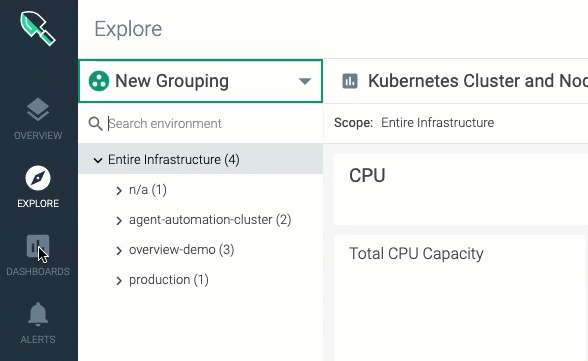

SaaS: Sysdig Monitor Release Notes
Note
For the latest updates, subscribe to the RSS feed.
May 10, 2021
Silencing Alert Notifications
Sysdig Monitor allows you to silence alert notifications for a given scope for a predefined amount of time, and schedule silence in advance. When silenced, the alert will still be triggered and posted on the Events feed and in the graph overlays but will indicate it has been silenced. The types of notification channels you can use are Email, Slack, and Amazon SNS.
You will be notified 30 minutes before the start time and 30 minutes before the end time of a silence window. You will also be able to easily extend or end an active silence. To access the feature, navigate to Alerts > Silence on the Monitor UI.
For more information, see Silence Alert Notifications.
Workload Label
Sysdig Monitor now supports two new labels, kubernetes.workload.name and kubernetes.workload.type which can be used for scoping Dashboards and configuring Gropings.
Earlier, each type of object (deployment, replicaset, statefulset, etc.) was unique, and in turn, you needed to use different types of Kubernetes Dashboards and a different Grouping resulting in n/a , where distinct types of Kubernetes objects are listed.
For more information, see Unified Workload Labels.
New Kubernetes Dashboards
Available Resources Calculator.Ensure there is sufficient capacity in a cluster to deploy a new application.
Application Status&Overview.Understand the status of applications (workloads) running in a cluster by monitoring performance, pod health, and resource usage
Cluster Capacity Planning.Monitor the capacity of Kubernetes clusters ensuring they're correctly sized to support new applications when they're deployed.
Container Resource Usage&Troubleshooting.Understand the performance of the different containers running in pods across your infrastructure and identify any that are behaving anomalously.
Node Status&Overview.Monitor the health, resource usage, and network statistics for nodes running in clusters
Pod Rightsizing&Capacity Optimization.Optimize your infrastructure and better control cluster spend by ensuring pods are sized correctly. Understand if you can free up resources by reducing memory and/or CPU requests.
Pod Scheduling Troubleshooting.If a pod cannot be scheduled due to insufficient resources, use this dashboard to identify where the resource bottleneck is.
Pod Status&Overview.Monitor the health, resource usage, and network statistics for pods running as part of workloads.
April 26, 2021
Extended Label Set
Running PromQL queries is now smoother and faster with the extended label set. The extended label set is created by augmenting the incoming data with the rich metadata associated with your infrastructure and making it available in PromQL. You now no longer have to write complex queries in order to troubleshooting infrastructure issues or building dashboards and alerts. For more information, see Run PromQL Queries Faster with Extended Label Set.

Microsoft Team Channel
You can now use Microsoft Team s as a notification channel in Sysdig Monitor. See Configure a Microsoft Teams Channel for more details.
S3-Compatible Storage for Capture Files
Configuring S3-compatible storage, such as Minio or IBM Cloud Object Storage, for your Sysdig captures is now supported on Sysdig Monitor. The capability can be turned on by configuring the system appropriately, as given in(SaaS) Configure Custom S3 Storage Endpoint.
Webhook Channel Enhancements
Sysdig supports the following on a Webhook channel integration:
Insecure connections: You now have the ability to skip the TLS verification.
Custom headers: If your Webhook integrations require additional headers or data you can append to the alert format by using a custom header on the UI. This option is in addition to the existing API facility to add custom headers programmatically.
For more information, see Configure a Webhook Channel.
View LogDNA Alerts as Sysdig Events
If your environment has both LogDNA and Sysdig, you can view relevant LogDNA Alerts as Events in Sysdig. These Sysdig Events behave like any other type of Events in Sysdig They will be overlaid on Sysdig graphs, listed in the Event Feed, and can be used to create an Alert in the Sysdig Platform. The link provided in the Event Details redirects you to the LogDNA Platform, in case further investigation is needed. For more information, see LogDNA Events.
March 03, 2021
PromQL Query Explorer
PromQL Explorer helps you understand metrics and their labels and values, and create queries faster before using them in Dashboards and Alerts.

PromQL can be used not only with metrics collected from Prometheus endpoints but also with Sysdig native metrics collected by the agent. For more information, see PromQL Query Explorer.
IBM Cloud Functions
You can now use IBM Cloud Functions as a notification channel in Sysdig Monitor. See Configure IBM Cloud Functions Channel for more details.
SAML Single Logout
Sysdig supports SAML Single Logout. This feature enables you to configure automatic logout from the Identity Provider when users log out of Sysdig. This feature is currently available for SaaS regions US-West and EU-Central. For more information, see Configure SAML Single Logout.
Enhanced Dashboard Scope Session
When returning to a previously visited Dashboard the UI retains your last used scope.
November 19, 2020
Explore Workflow Enhancements
The Explore interface has been improved to allow faster troubleshooting.
You are now launched directly into the drill-down view when you navigate to Explore. You will still be able to group and navigate your infrastructure by using the hierarchical scope tree.
The new Grouping editor helps you create and manage your infrastructure groupings.

For more information, see Explore.
Transfer Dashboard Ownership
Administrators have now the ability to transfer dashboard ownership to another user. For more information, see Transfer Dashboard Ownership.
Enhancements for Navigating Dashboards
You can now pin the dashboard menu to the sidebar in the Sysdig Monitor UI. Pinning makes it easier to navigate and browse different Dashboards. In addition, the Dashboard interface has been enhanced to retain your preference for open or closed categories to help you locate the desired items faster.
October 22, 2020
Visualizing Missing Data on Dashboards
Dashboards now show null or missing data values as gaps instead of zero. Optionally, missing data can be displayed as a dotted or solid line in both Form-based and PromQL panels. StatsD metrics will continue to show null values as zero unless overridden by the settings. For more information, see Display Missing Data.
Time Navigation in Events Feed
You can now browse and find historic events easily by using time navigation.
Zooming Out Dashboards
You now have the ability to zoom out Dashboards. This feature doubles the selected timeframe by 2x for a better context surrounding a problem when troubleshooting an incident.
July 27, 2020
Sysdig Essentials
We have introduced a new product tier, Sysdig Essentials. This tier includes everything required to achieve the five essential requirements for practicing Secure DevOps:
Image Scanning
Runtime Security
Compliance
Kubernetes and container monitoring
Application and cloud service monitoring
To learn more about Essentials, register for our webinar, Deploy Faster by Automating Container Security, Monitoring and Compliance.
With the introduction of Essentials, Its also easier to get started with a trial program and manage your Sysdig subscription.

Learn the difference between Essentials and Enterprise, including pricing and features, at Pricing.
Rebranded Login Page
The login page has been updated with the Sysdig Kraken and the new logo.

Sysdig Monitor Enhancements
Hosts Overview
To complement Sysdig Kubernetes Overviews, Hosts Overview has been released. Host Overview provides a unified view of the performance and health of physical hosts in your infrastructure.
New and Improved Empty States
A number of different splash screens have been introduced to guide you through getting up and running with features across the application.
Sysdig Platform Enhancements
SAML Single Sign-On
The initial email to the following types of users will take them directly to the Single-Sign-On URL, and not the registration page.
SAML SSO Users
The users that are invited to the platform (as opposed to having them automatically created via Sysdig on-demand provisioning for SSO)
Earlier, landing on the registration page was confusing to users because they had to set up their initial password.
June 17, 2020
This 3.2.6 release focuses on the general availability of New Dashboard with a rich set of features and enhancements. Learn more about the release from the blog post, New and improved dashboards .
New Dashboards is GA
Sysdig Monitor offers a new version of dashboards. Its improved editing experience provides you with more flexibility and the new set of functionalities offers additional ways to visualize and consume your Sysdig data.
Features and Enhancements
Improved User Experience
The New Dashboard offers a more fluid, natural dashboard building experience. The UI has been redesigned to introduce two types of panelsform-based and PromQL-based to make visualizing your metrics effortless. Use a PromQL-based panel to build dashboards for Prometheus raw metrics and custom metrics. The form-based panel for legacy queries. For more information, see About the Dashboard UI.
Dashboard Sharing
You can now share your dashboard with members within your Sysdig team or share it across teams with fine-grained access controls. Define who should be able to see the dashboards and what level of access they should be granted: view only or collaborator with edit privileges. For more information, see Sharing New Dashboards
Time Series Name Templating
Customize the time series names on the legend on the panel editor by using the labels associated with Prometheus metrics and segments to gain context faster. For more information, see Create a New Panel.
Multi-Metric, Multi-Segmentation Options
Configure multiple queries within a single panel, and configure each query with multiple segmentation and scoping options. Individual queries can be customized to render as a line or stacked area. For more information, see Using PromQL.
Event Overlay
Contextualize metrics and understand the why faster with a unified view of both metrics and events. Configure event overlay to display events from Kubernetes environments as well as alert events, and any other events ingested using Sysdigs open REST API. For more information, see Display Dashboard Specific Events.
Dashboard Templates
You can quickly view your infrastructure through the lens of one of Sysdigs curated dashboards, or use it as a base to start building your own. You can find dashboard templates for managing Kubernetes capacity and health, hosts and server performance, applications and services telemetry, and the security posture of your infrastructure with data fed from Sysdig Secure. See Dashboard Templates to learn more.
Mapping Values to Text
Instantly understand whats going on by mapping number panel values to text. If you have a metric that returns 1 for up, and 0 for down, map those values to UP and DOWN respectively. By defining thresholds and mapping to text, you don't need to be concerned about the values. This is critically valuable when dashboards are shared between team members. For more information, see Text.
Granular Axes and Legend Controls
You have more flexibility when customizing the axes, as well as better support for time series with long names. You can now configure the legend by toggling its visibility and moving it to the bottom of the panel. See About the Dashboard UI.
Major Changes
Significant changes have been introduced to enhance the usability of the existing functionalities. Review the changes before you explore the functionalities.
Topology Maps
Topology maps are no longer available in Dashboard. Access Topology maps through Explore, as you explore your microservices and Kubernetes applications.
Dashboard Wizard
My Dashboards are no longer accessible in Explore. Additionally, Dashboard Wizard has been removed. Instead, the concept of Templates has been introduced in Dashboards to help you get started with a library of templates addressing key use cases.
Histogram and Summary Metric Type
Histogram and summary metrics are no longer supported in the Histogram panel type. You can continue to use them within Explore. If you have enabled PromQL, we encourage you to use Prometheus functions for visualizing histograms.
Use the new Prometheus histograms with the histogram_quantile metrics on a time-series graph.
APIs and Integrations
API endpoints for the legacy dashboards (v2) will soon be deprecated. If you are directly integrating into the API, please contact Sysdig for guidance. Additionally, our Python SDK and CLI have been updated to support the new dashboards APIs.
PromQL Support
PromQL support for querying Prometheus metrics has been rolled out to a subset of Sysdig Monitor users. See Using PromQL.
Intelligent $__interval
Use $__interval within a PromQL query and Sysdig will intelligently use the most appropriate sampling depending on the time range you have selected. This configuration ensures that we balance providing access to the most granular data available while downsampling when you select a long time range to panels load as fast as possible.
Scope variables
Configure scope variables at the dashboard level to quickly filter metrics based on cluster, namespace, workload, and more. When using PromQL queries, the scope can be injected by using dynamic variables. This configuration is significant when troubleshooting as it allows you to switch context quickly without reconfiguring queries.
Smart Autocompletion and Syntax Highlighting
Autocomplete suggests metrics, operators, and functions, while syntax highlighting helps keep you on the right path and helps highlight problems within a PromQL query. This is invaluable in dynamic environments and allows you to craft the right queries faster.
Configurable Default Team Role
You can now define the default user role to apply when a new member is added to the team. The Admin can change this default on a per-team basis. See also: Create a Team.
RBAC and Team Assignment for Notification Channels
Previously, notification channels in Sysdig Secure and Monitor were treated as global entities, visible and editable for most users of the platform regardless of team configurations.
We are enhancing the management and RBAC controls in the following ways:
Notification channels can now be global or limited to a particular team
Global channels can be managed by admins and can be viewed/used by other roles, while team-limited channels are available only to team members
Team Manager , Advanced User, and Service Manager (Secure) roles can create/update/delete team-scoped notification channels, they can also read and use the global ones
Standard and View Only roles can read team-limited and global notification channels
Admins will be able to create global notification channels and migrate channels from global to team-limited, and also from one team to another.
See also: Set Up Notification Channels and the Share With field in each individual channel setting page.
May 15, 2020
The New Get Started Page
The Get Started page provides the key steps to ensure that you are getting the most value out of Sysdig Monitor. Well update this page with new steps as we add new features to Sysdig Monitor.

The Get Started page also serves as a linking page for:
Documentation
Release Notes
The Sysdig Blog
Self-Paced Training
Support
You can access the page at any time by clicking the rocketship icon in the left navigation bar. See Getting Started with Sysdig Monitor.
AWS Role Delegation
Sysdig Monitor can now utilize the Amazon Web Service (AWS) AssumeRole functionality and discover cloud assets, grab CloudWatch metrics from your AWS account, and use custom S3 bucket for storing captures. Upon integrating with an AWS role, you can delegate access to AWS resources that are not associated with your Sysdig AWS account.
Role delegation is an alternative to the existing integration method using the access keys. This method is considered secure as sharing developer access keys with third-parties is not recommended by Amazon.
For more information, see Integrate with AWS Role Delegation.
April 16, 2020
Default Dashboards for Istio 1.5
Default dashboards (Overview and Services dashboards) are now available for Istio v1.5 in addition to the existing ones for Istio v1.0.
November 21, 2019
Overview Is GA
Overview is now generally available. Overview leverages Sysdig's unified Kubernetes data platform to monitor, secure, and troubleshoot your Kubernetes clusters and workloads.
Major highlights of Overview GA include but are not limited to:
Multi-cloud view of the health, risk, and capacity of your Kubernetes infrastructure a single pane of glass for Kubernetes Clusters, Nodes, Namespaces, and Workloads across a multi- and hybrid-cloud environment. You can easily filter by any of these entities and view associated events and health data. View the infrastructure organized by Clusters, Nodes, Workloads
Shows metrics prioritized by event count and severity, allowing you to get to the root cause of the problem faster.
Drill down to Dashboards for instant insights.
To learn about the capabilities of the Overview feature, see Overview.
Beta Features: Prometheus and New Dashboards
Introducing Prometheus and New Dashboards available in Beta. Contact sales@sysdig.com to join the Beta Program.
[BETA] Prometheus Capabilities
Sysdig now supports native Prometheus time series ingestion. Run Prometheus queries inside Sysdig Monitor and create visualization by using the new Beta Dashboards that support it. This enables you to use Sysdig Monitor as a standard Prometheus data source for other visualization tools, such as Grafana. For more information, see Using PromQL.
With this support, Prometheus and Sysdig metrics can now be supported in regular Prometheus expressions.

[BETA] New Dashboards
Sysdig Monitor provides an enhanced New Dashboard to use with Prometheus. For more information, see Dashboards.

The New Dashboards offer:
Flexibility to position the Legend.
Ability to run multiple queries.
Inherit the Dashboard scope to individual panels.
Multi-select items in the Legend to narrow down the lines you want to focus on. Use command-click on Mac and Control-click on non-Mac machines.
Features new query types: Form-based and PromQL expressions with the easy toggling facility.
Enhanced auto-layout with the ability to re-position panels.
To access the New Dashboards:
Click the Dashboards tab on the left navigation panel.
ClickAdd Dashboard (+)
Click Beta Dashboards.
Enhanced Out-of-the-box Dashboards
In an attempt to improve the Dashboards experience, the following changes have been introduced:
The following Dashboards are added:
Kubernetes Cluster Overview: Provides nodes and workloads availability and highlights the high-level health of your Clusters. It also summarizes resources consumption (CPU, memory) across Nodes and Namespaces to pinpoint possible anomalies and node disk utilization
Kubernetes Node Overview: Provides availability of the Nodes, indicating potential issues reported by Kubernetes; a summary of resource (CPU and Memory) allocation and utilization, as well as Network and Disk utilization.
Kubernetes Namespace Overview: Provides a high-level summary of availability, and resource allocation and utilization across all the Workloads in the selected Namespace.
Kubernetes Deployment Overview: Provides a detailed summary of pod status, pod restarts, as well as resource allocation and utilization across pods for each Workload.
Kubernetes StatefulSet Overview: Provides a detailed summary of pod status, pod restarts, as well as resource allocation and utilization across pods for each StatefulSet.
Kubernetes DaemonSet Overview: Provides a detailed summary of pod status, pod restarts, as well as resource allocation and utilization across pods.
Kubernetes Job Overview: Provides a detailed summary of job status, completion trend, pod restarts, as well as resource allocation and utilization across pods.
Kubernetes ReplicaSet Overview: Provides a detailed summary of pod status, pod restarts, as well as resource allocation and utilization across pods for each ReplicaSet.
Kubernetes Pod Overview: Provides a detailed summary of pod status, pod restarts, and resource allocation and utilization in a selected pod.
Kubernetes Workloads CPU Usage and Allocation: Helps you verify that CPU requests are properly configured and actual utilization is expected.
Kubernetes Workloads Memory Usage and Allocation: Helps you verify that memory requests are properly configured and actual utilization is expected.
Kubernetes CPU Allocation Optimization: Helps you verify that infrastructure resources are available for future needs and are not wasted.
Kubernetes Memory Allocation Optimization: Helps you verify that infrastructure resources are available for future needs and are not wasted.
The following Dashboards are retained:
Health Overview (applicable to all the objects in the environment)
Horizontal Pod Autoscaler (the default Dashboard when selecting an HPA)
Resource Quota
Service Health (the default dashboard when selecting a service)
Cluster and Node Capacity
The following Dashboards are removed:
State Overview
Daemonset State
Namespace State
Stateful State
Nodes State
Deployment State
Deployment Health
Nodes Health
Namespace Health
Pod State
Pod Health
Replica Set Health
For more information, see Dashboard Templates.
What's n/a?
The Sysdig Monitor UI displays n/a in several scenarios associated with labeling. The Explore UI has now been enhanced to add a tooltip for n/a to help you understand the scenario. See The Meaning of n/a for more information.
Filtering Events by Scope
Events are now filtered by Scope to show the most relevant Events in Explore and Dashboards. This is an extension of the existing Event Scope functionality. You can toggle between showing Event feed from the entire infrastructure and only from the particular scope you are interested in within the infrastructure. Event scoping for Dashboards and Explore is enabled by default.

Filter Events by Scope in Dashboards
By default, Events are filtered to show only the relevant ones. However, you can turn the filtering off and see Events from the complete scope. To do so:
Click the Dashboard Settings (three dots) icon and select Events.
Use the toggle button to turn off Filter events by dashboard Scope.

Click Save.
Similarly, you can filter Events by Scope in Explore.
Known Issues
Time Chart may encounter some response time delays
Not all the functionality from the existing dashboards will be available in the new dashboards. The following functionalities are not yet fully functional or not yet available:
Gauge chart
Text Panel
Top Chart
Table
October 11, 2019
Ability to "Favorite" a Dashboard
Users can click the star icon to mark a "Favorite" dashboard, which will then be listed under "My Favorites" in the Dashboard view.

Enhancement: Additional Metrics Segmentation
This change enables Sysdig Monitor to segment metrics file.bytes.in and file.bytes.out by file.mount and file.name.
Enhancement: New Documentation Site at docs.sysdig.com
Sysdig's documentation platform has been upgraded and moved to docs.sysdig.com.
Improvements include:
Look and feel: Updated to match the rest of the Sysdig branding
Search: Enhanced search speed, accuracy, and ease
Structure and content: Enhancements to content have been added and are being continuously updated
Feedback: Buttons on each page enable users to communicate directly with the documentation team.
August 14, 2019
New Default Kubernetes Grouping
Groupings for Kubernetes have been modified. This updated Grouping is available to new teams. Default groupings are immutable-they cannot be modified or deleted other than by copying. Modifying a copy is allowed.
New Groupings:
Clusters and Nodes (
cluster.name > node.name > pod.name > container.name)Deployments (
cluster.name > namespace.name > deployment.name > pod.name > container.name)Services (
cluster.name > namespace.name > service.name > pod.name > container.name)Statefulsets (
cluster.name > namespace.name > statefulset.name > pod.name > container.name)Daemonsets (
cluster.name > namespace.name > daemonset.name > pod.name > container.name)ReplicaSets (
cluster.name > namespace.name > deployment.name > replicaset.name > pod.name)HPAs (
cluster.name > namespace.name > hpa.name > pod.name > container.name)
For more information, see Grouping, Scoping, and Segmenting Metrics.
Enhanced Event Notification
The ability to customize the subject and body of alert notifications with variables has been extended to Event notifications. Event titles and notification messages are in sync in the following cases:
Event feed on the Events page
Event overlay on Dashboards page
For more information, see Events.
Units for Metrics
The format of metric units are the same for the following:
The CPU and Memory metrics for Host and Container.
Kube-state CPU and Memory metrics.
 |
Introducing the same format now makes the comparison of those metrics easier on a chart.
Container Segmentation
Sysdig now supports segmenting all net.* metrics at container or pod level by low level net.* dimensions, such as net.http.url or net.http.status.code. Container-based teams now display segmentations for net.http.* metrics as expected. The net.http.url and net.http.status.codes are displayed if you select a container-based team as it does for a host-based team for the same cluster.
Display Instance Name
Instance name in the Sysdig Monitor UI is now visible during creating and editing it. Instance names are displayed right below the username in the user dialog for switching teams.
Default Dashboard for Cluster and Node Capacity
Kubernetes Cluster and Node Capacity Dashboard has been refreshed to add actual usage of CPU and Memory compared to Requests, Limits and Allocatable capacity.
 |
Aggregation for Kubernetes Nodes Health
Aggregation method has been refreshed for Kubernetes Node metrics. The Kubernetes Node Health dashboard has been updated with metric aggregations that are 'summed' across all containers running on the node to reflect accurate node level data.
July 11, 2019
Enhanced Dashboard Menu
The Dashboard menu features a drawer-style popover that displays a list of Dashboards you own and those shared by your team. With the popover menu, you can add new Dashboards and search for existing ones. Click a Dashboard name to access the relevant Dashboard page where you can continue with the regular Dashboard settings.
|  |
Customize Alert Notification Template
Sysdig Monitor alerts now provide an option to customize the messages that are sent with alert notifications in email and other channels, such as Pagerduty and Webhook.
Use the Alert Editor to input dynamic variables, such as hostname, or a hyperlink, and to add custom messages in plain text to the notifications for intended recipients. You can modify both the subject and the body of the alert notification with a hyperlink or a variable. For example, you can add an agent id or a link to a Dashboard to the message. This can help provide context for troubleshooting the errors that triggered the alert.
For more information, see Customizing Alert Notification.
 |
Prometheus Remote Scraping
Sysdig Monitor can now collect Prometheus metrics from remote endpoints with minimal configuration.
Remote endpoints (remote hosts) refer to hosts where the Sysdig agent cannot be deployed, e.g., a Kubernetes master node on managed Kubernetes services such as GKE and EKS, where user workload cannot be deployed. To enable remote scraping on such hosts, simply identify an agent to perform the scraping and declare the endpoint configurations in the agent configuration file.
The collected Prometheus metrics are reported under and associated with the agent that performed the scraping, rather than with a process. For more information, see Collecting Prometheus Metrics from Remote Hosts .
Enhancements to Kafka AppCheck
Kafka integrations can now support authentication and SSL/TLS. If authentication or SSL/TLS are enabled in Kafka, see Apache Kafka Example 5 for how to enable configuration details on the Sysdig side.
Two New Metrics for Accurate Pod Counts
Two new Kubernetes metrics, kubernetes.namespace.pod.desired.count and kubernetes.namespace.pod.available.count, have been added at the Namespace level to track desired and available pod counts.
Note
For earlier release notes, please see Sysdig Monitor SaaS Release Notes, here.